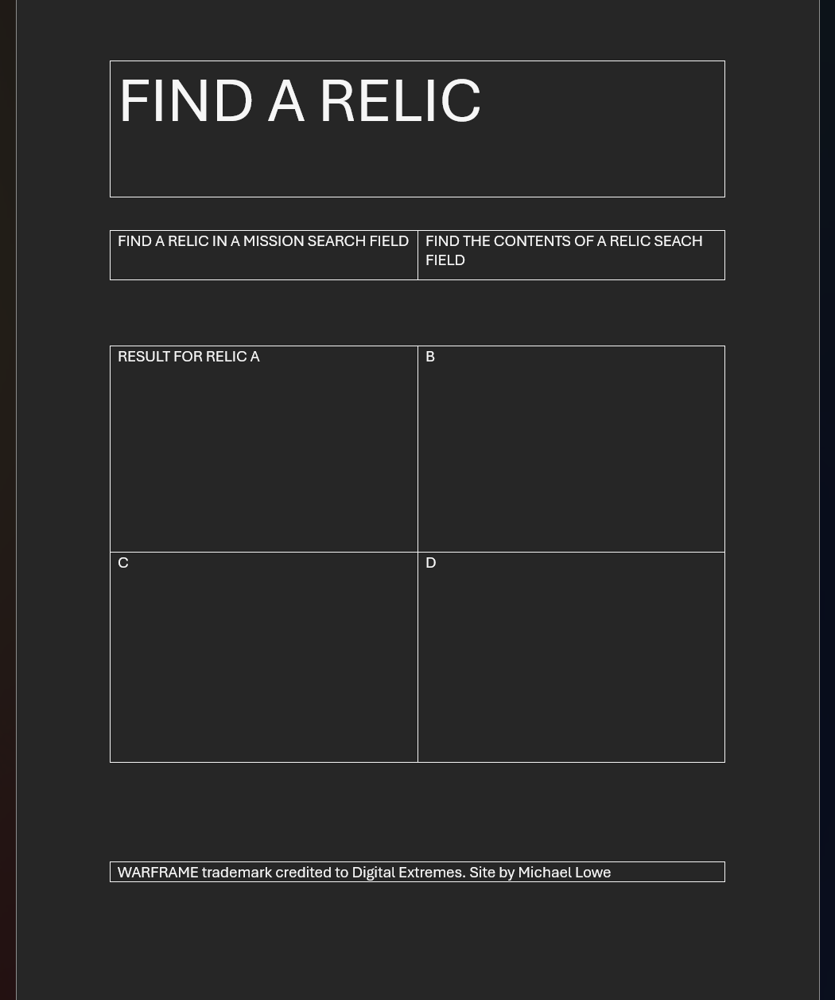

Overview
Purpose
Simplify the process of finding the right relic by creating two general search fields, mission locations of a specific relic and which relic has what reward.
Audience
Players of the FTP looter shooter Warframe
Dynamic elements
The dynamic elements will be the results field. The current idea is to allow looking for up to 4 relics or one possible reward. The relic search will display a table listing the mission each relic can be found, the loot pool, and if non-relic items are in that pool. The reward lookup will bring up every relic containing that part, the reward tier that part is in, and if that relic can currently be earned from a mission.
Branding
Website Logo
Style Guide
Color Palette
Palette URL: https://coolors.co/396e94-e7c24f-a43312-381d2a-aabd8c| Primary | Secondary | Accent 1 |
|---|---|---|
| [#FFFFFF] White | [#3187B5] | [#D4AF37] |
Pseudocode for your project
if (sanitized search input equals part of sanitized relic names) { search (missionarray.relic) for (sanitized search input) return missionarray.name } if (returned mission name = mission array name){ return reward chance } if (relic reward search input = relic.reward){ add relic name to list add reward chance to list return list }
Wireframes
Create wireframes for your project page(s). One for each page and list them here.
Landing page
Table will display differently according to the number of look ups. IE one will return centered, two will be side by side, ect.
